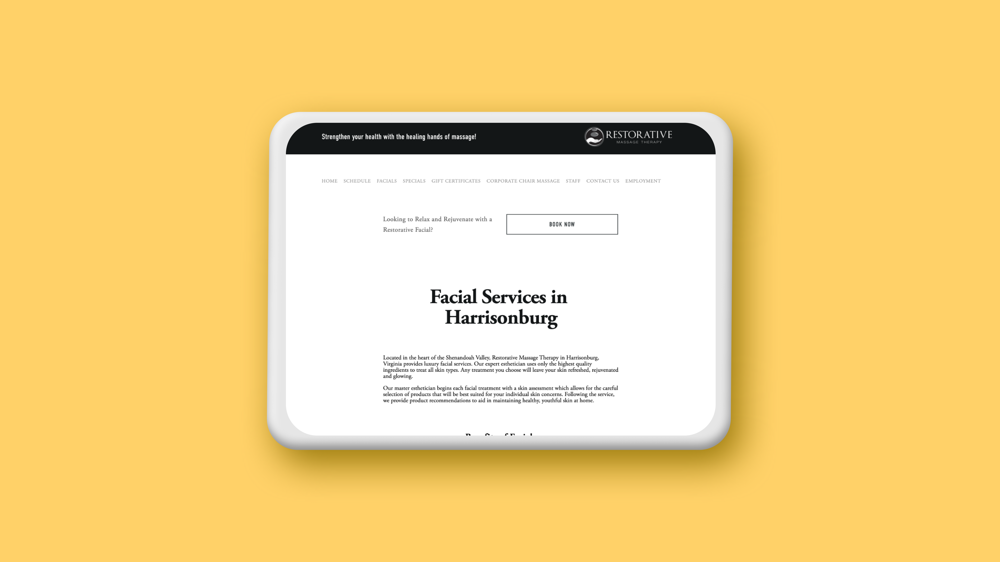

Recent Projects

STUDY SPOT
Semester-long UX Research and Design group project focusing on ideation, prototyping, usability testing, and presenting our findings.

APP FLOW REDESIGN
A UX case study focusing on redesigning one user flow of an application that currently exists.

HIP UX DESIGN
A collection of websites created over the course of a semester to showcase excellent communication skills and web design.

Client Work
This is a webpage redesign that I designed for Restroative Massage Therapy—a client that I worked with during my internship at Bluestone Communications.